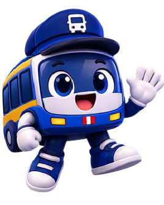
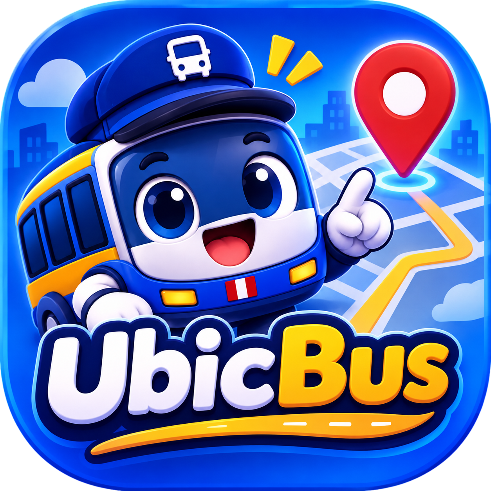

Busca tu ruta
Explora recorridos y compara alternativas para encontrar una opción que se adapte a tu destino.
Encuentra cómo llegar, conoce tus opciones y sigue tu bus. Con UbicBus, moverte por la ciudad se siente más sencillo.
¡Hola! ¿A dónde vamos?
Las herramientas que necesitas para organizar tus recorridos y aprovechar mejor tu tiempo.
Explora recorridos y compara alternativas para encontrar una opción que se adapte a tu destino.
Consulta el seguimiento GPS en tiempo real y mantente al tanto del recorrido.
Ten a mano tus rutas frecuentes y encuentra rápidamente tus paraderos cercanos.
Activa avisos de llegada para estar preparado antes de que tu bus llegue.
Revisa distintas alternativas de viaje y elige la que más te convenga.
Consulta información guardada con el modo sin conexión y comparte reportes ciudadanos.
UbicBus reúne información útil para que puedas organizar tus viajes desde un mismo espacio.
Escribe a dónde necesitas llegar.
Compara recorridos y paraderos disponibles.
Guarda tu ruta y consulta las actualizaciones.
¡Mucho gusto! Soy Busi, la mascota de UbicBus. Estoy aquí para acompañarte, orientarte y hacer que descubrir tu ciudad sea una experiencia más amigable.
Conoce UbicBus →
¡Nos vamos! ✦✦✳Estamos preparando una experiencia pensada para hacer tus recorridos más simples. Muy pronto podrás conocer más.
Quiero saber más →Los enlaces de descarga se habilitarán cuando la aplicación esté publicada.
UbicBusTu ciudad, más cerca.Te contamos un poco más sobre UbicBus.
Es una aplicación móvil de transporte público que busca ayudarte a planificar recorridos, ubicar paraderos y consultar información de tus viajes.
Sí. Entre sus funciones se consideran las rutas favoritas para que puedas acceder a ellas con mayor facilidad.
La aplicación contempla seguimiento GPS en tiempo real, sujeto a la disponibilidad de información de cada servicio.
Los enlaces oficiales se agregarán cuando la aplicación esté disponible para descarga.